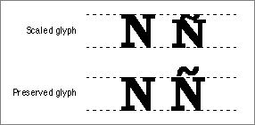

Preserving the Shapes of Glyphs
Most glyphs in an alphabetic font fit between the ascent line and the descent line, which roughly mark (respectively) the tops of the lowercase ascenders and the bottoms of the descenders. Bitmapped fonts always fit between the ascent line and descent line. One aim of outline fonts is to provide glyphs that are more accurate renditions of the original typeface design, and there are glyphs in some typefaces that exceed the ascent or descent line (or both). An example of this type of glyph is an uppercase letter with a diacritical mark: "N" with a tilde produces "Ñ". Many languages use glyphs that extend beyond the ascent line or descent line.However, these glyphs may disturb the line spacing in a line or a paragraph. The glyph that exceeds the ascent line on one line may cross the descent line of the line above it, where it may overwrite a glyph that has a descender. You can determine whether glyphs from outline fonts exceed the ascent and descent lines by using the
OutlineMetricsfunction.OutlineMetricsreturns the maximum and minimum y-values for whatever glyphs you choose. You can get the values of the ascent and descent lines using theFontMetricsprocedure. If a glyph's maximum or minimum y-value is greater than, respectively, the ascent or descent line, you can opt for one of two paths of action: you can change the way that your application handles line spacing to accommodate the glyph, or you can change the height of the glyph.The Font Manager's default behavior is to change the height of the glyph, providing compatibility with bitmapped fonts, which are scaled between the ascent and descent lines. Figure 4-15 shows the difference between an "Ñ" scaled to fit in the same amount of space as an "N" and a preserved "Ñ". The tilde on the preserved "Ñ" clearly exceeds the ascent line.
Figure 4-15 The difference between a scaled glyph and a preserved glyph

You can change this default behavior by calling theSetPreserveGlyphprocedure. If you callSetPreserveGlyphwith thepreserveGlyphparameter set toTRUE, the Font Manager preserves the shape of the glyph intended by the font's designer.The
GetPreserveGlyphfunction returns a Boolean value that indicates whether or not the Font Manager has been set to preserve the shapes of glyphs from outline fonts. You should call this function and save the value that it returns with your documents. Then, when the user opens a document in your application, you can callSetPreserveGlyphwith that value to ensure that glyphs are scaled appropriately.